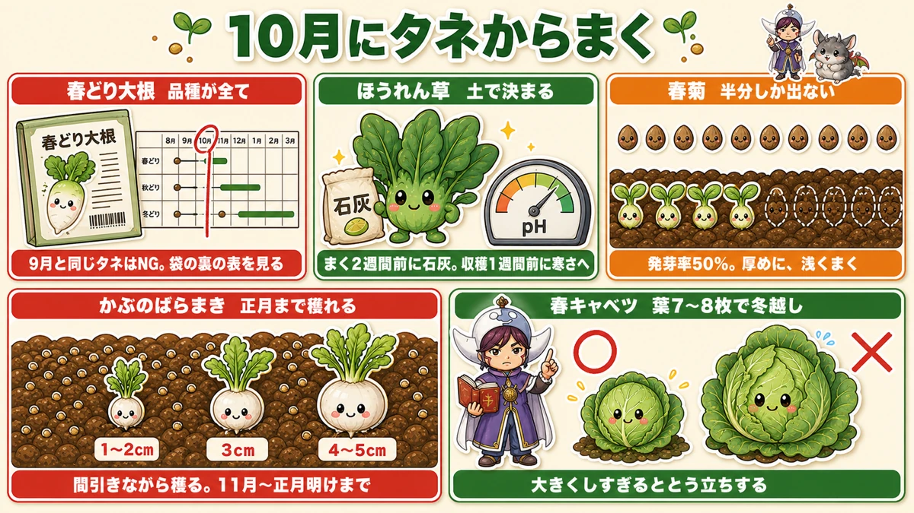
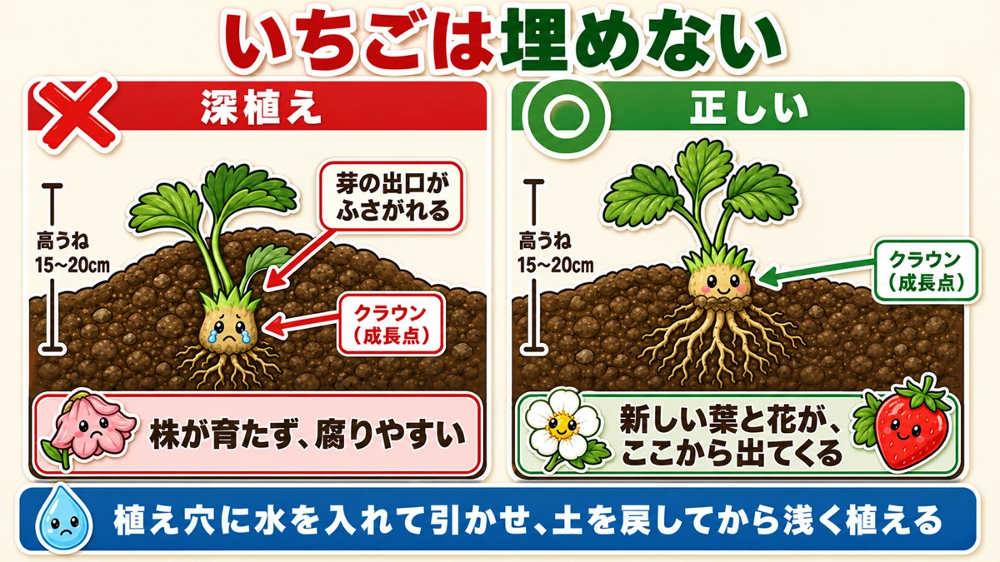
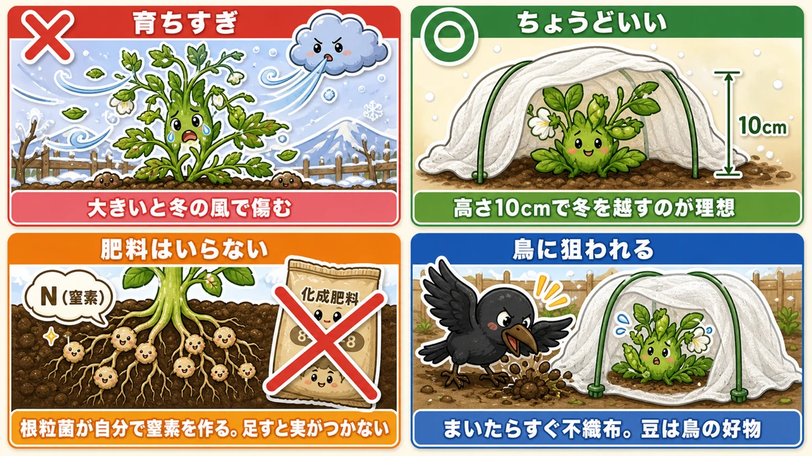
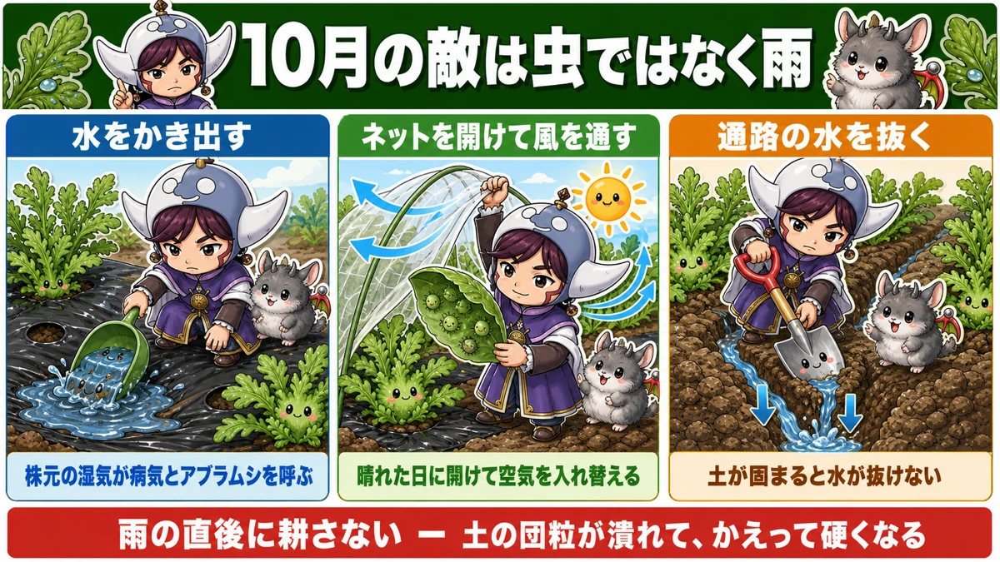
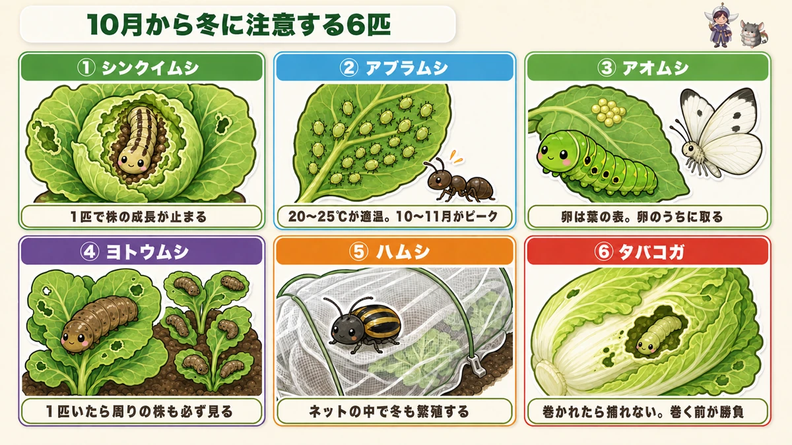

10月にまく・植える野菜｜いちごの植え方、豆のタネまき、長雨の手当て、秋の虫
どうも、8150（えいこう）です🌱 家庭菜園歴8年、理科の教員免許を持っていて、有機・無農薬で野菜を育てています。
📖 この記事の目次
この記事で分かること
- 10月は、冬を越して、翌年の春から初夏に収穫する野菜を始める時期です。春どりの大根や春キャベツなどがあります。
- かぶ、ほうれん草、レタスなど、10月にタネからまける野菜もあります。夜が冷えこむ日には、不織布で保温すると芽が出やすくなります。
- 10月の主役は、いちごの植えつけです。中心の芽（クラウン）を土に埋めない、浅く植えるのがいちばんのポイントです。
- 10月下旬からは、スナップえんどうなど豆のタネまきが始まります。肥料を入れすぎず、小さな苗のまま冬を越させます。
- 10月は雨が多く、長雨で畑が水びたしになることがあります。水を逃がし、ネットを開けて風を通し、乾くまで耕さない、の3つが大切です。
- 涼しくなると、アブラムシやアオムシ、ヨトウムシなどがまた増えてきます。こまめに点検しましょう。
10月になると、暑さもすっかり落ち着いて、畑仕事がしやすい季節になりますよね。朝晩は少しひんやりして、作業をしていても汗だくになることが減ってきます。秋に植えた野菜もぐんぐん育ってきて、見回るのが楽しい時期です。
そして10月は、来年の春に向けた野菜を始める月でもあります。いちごや豆、春キャベツなど、冬を越して春に実る野菜の準備がここから始まります。
この記事では、10月にまく・植える野菜と、いちごと豆の植え方、10月に気をつけたい雨と虫について、順番に書いていきます。説明が分かれているところは、両方の考え方を並べておきますね。
早見：10月の畑の基本（ひと目で分かる目安）
10月にタネからまく野菜
- 春どり大根：この時期にまいて、春に収穫するタイプの品種を選ぶ
- 春キャベツ：冬の前に大きくしすぎない
- 正月菜（もち菜）：小松菜の仲間。お正月の雑煮に使う地域もある
- かぶ：小かぶを、畝全体にばらまいて間引きながら収穫
- ほうれん草：酸性の土が苦手
- レタス（サニーレタスなど）：本葉が出てから植えかえる例
10月に植える・まく
- いちご：10月中に植えつけを終えるのが目安。クラウンを埋めない
- スナップえんどう：10月中旬から11月下旬がタネまきの時期とされる
10月の注意
- 長雨：水を逃がす、ネットを開ける、乾くまで耕さない
- 虫：アブラムシ、アオムシ、ヨトウムシ、ハムシ、シンクイムシなど
今月の畑は、こんな状態
冬を越して、春に収穫する野菜を始める
10月から育てる野菜の多くは、冬を越して、翌年の春から初夏に収穫を迎えます。年をまたいで育てるので、昔は「越年」の野菜と呼ばれることもありました。
ただし、10月にまく野菜がすべて年を越すわけではありません。かぶのように、年内に収穫できる野菜もあります。
夜の冷え込みが始まる
10月に入ると、気温が急に冷えこんでくることがあります。東京でも、夜に15度以下まで冷えこむ日が出てくる、という説明があります。
寒さに弱い野菜のタネは、芽が出るまでに時間がかかったり、芽が出なかったりすることが多くなります。そんなときは、不織布をかけて保温してあげると、芽が出やすくなります。

10月にタネからまく野菜
春どり大根
大根は、まく時期によって品種を選ぶ野菜です。10月にまくなら、この時期にまいて春に収穫できるタイプの品種を選びます。タネの袋で、まく時期と収穫の時期を確かめてください。
春キャベツ：冬の前に大きくしすぎない
春キャベツには、大事なポイントがあります。冬の前にキャベツが大きくなりすぎると、とう立ち（花の茎が伸びること）のスイッチが入ってしまうことがある、と説明されます。とう立ちのスイッチが入ると、春の成長期に葉が巻かずに、真ん中から花の茎が伸びてきてしまいます。
キャベツの品種にもよる、と説明されますが、冬の前に大きく育てすぎないことが、春キャベツを成功させるコツです。
正月菜（もち菜）
正月菜は、別名もち菜とも呼ばれる、小松菜の仲間の葉物です。小松菜よりも色が淡く、やわらかい葉が特徴です。お正月の雑煮に入れる地域もあります。地域によって、雑煮に入れる葉物はいろいろで、それぞれの土地の野菜があります。
かぶ：ばらまいて、間引きながら食べる
小かぶの品種を選んで、マルチをせずに畝全体にタネをたくさんまく、という育て方が紹介されています。とても密にまいて、育ってきたら間引きながら、小さいうちから収穫していきます。間引いたものも、葉ごと食べられます。
ほうれん草：酸性の土が苦手
ほうれん草は、酸性の土を嫌う野菜です。葉が黄色くなって元気がない場合は、土が酸性に傾いている可能性があります。草木灰をまくと回復するかもしれない、という説明もあります。ただし、黄色くなる原因は酸性だけではないので、決めつけずに土の酸度を測ってみてください。
レタス：本葉が出てから植えかえる
葉が赤くなるサニーレタスなど、レタスもこの時期にまける野菜です。何種類かのレタスのタネがまざったものをまいて、本葉が出てから植えかえる、という例が紹介されています。赤い色は、アントシアニンという植物が作る色素によるものです。
春菊は、苗を使う手も
春菊の秋まきは、一般的な地域では8月下旬から9月中旬が適期、という説明があります。春菊が育つのに適した温度は15〜20度くらいです。10月になってからなら、タネから育てた苗を植える方法も考えられます。
春菊のタネは芽が出る割合が低めなので、ほかの野菜より多めにまくのがポイントです。春菊は酸性の土に弱いので、石灰で酸度を整えておく、という説明もあります。
タネまきのあとの不織布の使い方
10月のタネまきでは、まいたあとに不織布をかけておくと、夜の冷えこみから土を守り、乾燥も防げるので、芽が出やすくなります。不織布は、光や水を通すので、かけたまま水やりができます。
芽が出てきたら、不織布の下で苗が押されて傷まないように、ふんわりかけ直すか、外して防虫ネットに替えます。芽が出たあとも冷えこむ日が続くようなら、トンネルにして苗との間にすき間をとってかけるとよいでしょう。

10月の主役、いちご
植えつけは、10月中に終えるのが目安
いちごの植えつけは、10月中には終わらせたい、と説明されます。いちごは冬のあいだほとんど成長しないように見えますが、土の中の根はどんどん広がって成長しています。植えつけが遅れると、その大切な根の成長が遅れて、春によい実がとれなくなることがある、という説明です。
ただし、植えつけの時期には幅があります。10月中旬から11月上旬という説明や、遅くても11月まで、という説明もあります（あとで書きます）。
手順1：よい苗を選ぶ
苗選びは、いちごの成功に大きく関わります。悪い苗を選んでしまうと、育ちが遅くなったり、実がよくできなかったりします。ホームセンターなどで苗がたくさんある場合は、よく見て選びましょう。株がしっかりしていて、葉の色がよく、病気や虫のあとがないものを選びます。
品種は、ホームセンターで売られているものなら、どれを選んでも大きな差はないと思います、という説明があります。好きな味や、育てたい実の大きさで選んで大丈夫です。家庭菜園でも安定して収穫できるように、改良された品種が並んでいるからです。
手順2：畝を作り、水はけをよくする
水はけの悪い畑では、畝を高くしてから植えると安心です。いちごは、根が水びたしになると傷みやすくなります。
手順3：マルチを張る（張らない考え方もある）
畝を作ったら、マルチを張ります。いちごは、マルチをしないと失敗するというわけではありませんが、マルチを張ることの利点のほうが多い、と説明されます。マルチを張ると、実が直接土にふれて汚れたり傷んだりするのを防げます。
一方で、植えつけのときにはマルチを張らずに、冬の終わりに張る、という考え方もあります（あとで書きます）。
手順4：植える前に、苗に水を吸わせる
植える前に、苗にしっかり水を吸わせておきます。バケツにポットの半分くらいまで水を張り、20分ほどつけておけばオッケー、という説明があります。
手順5：ランナーの向きを見る
苗をよく見ると、切られた古い茎がついていることがあります。これが、親株とつながっていたランナー（つる）のあとです。いちごの実は、このランナーと反対側に出てきやすい、と言われます。
そのため、ランナーのあとを畝の内側に向けて植えると、実が畝の外側（通路側）に出て、収穫しやすくなる、という考え方があります。ただし、必ずしも反対側に出るわけではない、とも説明されています（あとで書きます）。
手順6：クラウンを埋めずに、浅く植える
いちごの株元にある、葉のつけ根が集まった太い部分を「クラウン」と呼びます。ここが新しい葉や花が出てくる、いちごの心臓部です。
いちごを植えるときは、このクラウンを土に埋めないように、浅く植えるのがいちばんのポイントです。クラウンを埋めてしまうと、育ちが悪くなったり、腐ったりすることがあります。根の部分だけを土に入れて、クラウンは土の上に出しておきます。
手順7：植えたら、植え穴に水を
植えたら、手でしっかり押さえて、苗のまわりに水が行きわたるように水をやります。いらない水は葉にかけないように、植え穴の部分だけに水をやりましょう。
植えたあとは、基本的に冬のあいだの水やりは不要、という説明があります。雨も降るので、頻繁に水をやりすぎないことが大切です。ただし、プランターや、乾燥が続いて土がからからになっている場合は別です。
手順8：新しいランナーは切る
植えたあとに伸びてくる新しいランナーは、収穫を終えるまで切り続けるのが基本的な育て方、と説明されます。ランナーに栄養が取られるのを防ぐためです。ただし、切り忘れたからといって、実がつかないわけではありません。
肥料は、条件しだい
いちごは、肥料が多すぎるのを避けたい野菜です。肥えた場所なら、肥料なしで育てる、という提案もあります。
元肥を入れていない場合は、植えつけから半月〜1か月後に追肥をする、という手順も紹介されています。株元から15〜20cmほど離して、1株あたり10ccくらいの肥料を入れる、という例です。
にんにくと一緒に植える
いちごの近くに、にんにくを植える方法も紹介されています。いちごの株元から20〜30cmほど離して植える、という例があります。近すぎると、にんにくのほうの玉が小さくなった、という話もあります。
株を増やすなら、孫株から
いちごの株は、抜かずに置いておくと、ランナーで子株、孫株と増えていきます。株分けをする場合は、孫株以降を植えかえる、という説明があります。病気は子株までは受け継がれやすいけれど、孫株ではそれが少なくなる、という考え方です。

10月下旬、豆のタネまき
スナップえんどうのまきどき
スナップえんどうは、だいたい10月中旬から11月下旬がタネまきの時期とされます。ただ、ここ数年は夏の暑さが秋遅くまで続くので、少し遅めにまくのがよいかもしれない、という説明もあります。
小さな苗で冬を越させる
スナップえんどうは、寒さに当たることで花をつける準備をします。ただし、大きく育ちすぎた苗は、真冬の冷たい風に当たりやすくなるので、冬越しが難しくなります。冬を越すときの高さは、10cmくらいが理想、という説明と、真冬の時点で15cmくらい、という説明があります。
肥料は入れすぎない
スナップえんどうの土づくりで気をつけたいのは、肥料を入れすぎないことです。マメ科の植物は、根に根粒菌（こんりゅうきん）という菌をすまわせていて、この菌が窒素分を供給してくれます。そのため、窒素の肥料をたくさん入れる必要はありません。
前の野菜の肥料が残っている場所なら、肥料なしでも十分、という説明があります。ただし、牛ふん堆肥などで土づくりをする例もあり、「肥料をいっさい入れてはいけない」というわけではありません。
タネのまき方
- マルチの穴に、タネを4粒ほどまく
- 穴を開けたときに土がへこむと水がたまりやすいので、まわりの土を寄せて平らにする
- 土をかぶせて、しっかり押さえる
- 芽が出たら、元気なものを残して間引く
まいたあとは、鳥にタネや芽を食べられないように、ネットや不織布をかけておきましょう。豆のタネは大きくて目立つので、鳥にとっては格好のえさになります。
畝の高さ
畝の高さは、ふつうは10cmくらいでよい、という説明があります。水はけがよくない畑なら、15cm以上の高い畝にするのもよい方法です。
冬は、閉め切りすぎない
冬のあいだ、ネットや不織布で苗を囲うときは、閉め切りすぎないのが基本です。中が暖かくなりすぎると、苗が大きく育ちすぎてしまいます。ただし、伸びすぎてしまった苗は、あえて防寒して守る、という例外もあります。
豆と一緒に植える野菜
豆の畝に、春菊などの苗を一緒に植える方法もあります。タネから3週間ほど育てた春菊の苗を、豆の近くに植える例が紹介されています。
すでに育てている野菜の、10月の手入れ
大根：10月は葉を大きく育てる月
9月にまいた大根にとって、10月はとても重要な月だ、と説明されます。10月は葉が大きく広がり、1週間ごとに葉のサイズがどんどん大きくなっていきます。この10月に葉が大きく広がることで、10月後半から11月にかけて、根の部分が大きく太っていく、という説明です。
逆に言うと、この時期に葉が大きくならないと、小ぶりな大根になったり、うまく育たなかったりすることがあります。10月は週に1回は大根を観察して、虫がついていないか、葉の色はどうか、必要なお世話をしてあげましょう。
白菜：追肥と土寄せ
白菜は、植えつけてから約1か月後、外側の葉が広がってきたときと、結球が始まったときの2回、追肥をする、と説明されます。
- 防虫ネットを開ける
- 草が生えていたら、葉を傷つけないように軽く草取りをする
- 外側の葉の下あたりに、肥料をぱらぱらとまく
- 軽く土寄せをする
- ネットを閉じる
白菜：成長点に入りこむ虫に注意
白菜でとくに注意したいのが、ヨトウムシなどが成長点（中心の新しい芽）の近くに入りこんでしまうことです。このあと結球が始まると、玉の中に入りこまれて、取り除けなくなってしまいます。
葉に穴が開いていたり、株の上にふんが落ちていたりしたら、虫がいる可能性があります。葉をよくチェックして、マルチの下なども見ておきましょう。
ネットに葉がつっかえてきたら
野菜が大きくなって、葉がネットにふれて窮屈になってきたら、ネットを少しゆるめてあげます。外してしまうのではなく、ゆるめたり、支柱を足して高さを出したりして、虫よけは続けます。

10月の落とし穴は、雨
10月は、雨が多い
10月は気温が落ち着いてくる一方で、雨が多く、畑全体の湿度がなかなか下がりません。ひどい年は、雨が1週間ほど続くこともある、と説明されます。
畑が水びたしの状態が続くと、野菜が病気になったり、アブラムシが出たり、根が腐ったりする原因になります。長雨のあとは、次の3つの手当てをしましょう。
手当て1：マルチの上の水を逃がす
マルチの上に水がたまっていると、湿度が高くなって、野菜が病気になったり、アブラムシが出たりしやすくなります。水がたまっている場所があれば、早めにマルチに小さな穴を開けて、水を逃がしてあげましょう。
手当て2：晴れ間に、ネットを開けて風を通す
防虫ネットをかけたままだと、中に湿気がこもります。雨のあとの晴れ間には、ネットを開けて風を通し、ついでに虫がいないか点検しましょう。点検が終わったら、また閉じておきます。
手当て3：通路の水が抜けるようにする
雨で土が固まると、雨水がなかなか抜けなくなります。通路を少し深く掘ったり、スコップを差しこんでおいたりして、水が抜けやすい状態にしておくとよい、と説明されます。
ぬれた土は、乾くまで耕さない
雨のあと、土がぬれているうちに耕すと、土が固まってしまいます。ぬれた土をこねると、土の粒がつぶれて、乾いたときにかちかちになるからです。一度固まった土は、なかなか元に戻りません。耕したり、タネをまいたりするのは、土が乾いてからにしましょう。

10月から冬に注意する虫
暑さが落ち着いて、虫も減ってくるように思える時期ですが、寒さに強い虫や、冬の前に最後の繁殖をする虫もいます。10月から冬にかけて注意したい虫を紹介します。
シンクイムシ
野菜の中心の新しい芽（成長点）を食べてしまう虫です。成長点がやられると、その株は育たなくなってしまいます。大根やキャベツ、白菜などの中心部を、よく見ておきましょう。
アブラムシ
アブラムシは、夏のあいだ畑から姿が見えなくなったように思えます。でも、気温が20〜25度くらいになってくると、また盛んに増えはじめる、と説明されます。10月から11月の涼しい時期は、意外とアブラムシの被害が多くなる時期でもあります。アリがたくさん歩いている株は、アブラムシがいないか確かめてみてください。
アオムシ
アオムシは、モンシロチョウの幼虫で、キャベツや白菜などのアブラナ科の野菜につく虫です。最近は気温が高い影響で、関東地方ではほぼ一年じゅう、モンシロチョウが飛んでいるのが見られる、と説明されます。白いチョウが飛んでいたら、卵を産みつけられている可能性が高いので、葉をよく見ておきましょう。
ヨトウムシ
ヨトウムシは一年じゅう発生しますが、特に8月以降、秋から冬にかけて増える、と説明されます。夜に出てきて、葉を大きく食べてしまいます。葉に大きな穴があいていたら、株のまわりの土の中も探してみてください。近くの株にもいる可能性が高い、と説明されます。
ハムシ
キスジノミハムシやダイコンハムシなどは、秋から冬にかけても発生が続きます。ネットの中でも、冬のあいだに増え続けることがある、という話もあります。土の中と葉の上を行き来するので、見つけたら早めに取り除きましょう。
白菜の下の葉は、取りすぎない
白菜の下のほうの葉が枯れて腐っていると、そのにおいに虫が寄ってくることがあります。完全に枯れた葉は取り除いてよいのですが、まだ緑の外の葉は、結球のために働いているので取りすぎないようにしましょう。
10月の畑の回り方（例）
10月は、タネまきや植えつけと、すでに育てている野菜の手入れが重なる月です。畑に行ったときに回る順番を決めておくと、やり忘れが減ります。ひとつの例として並べておきます。
1：虫の点検から
まずは、育てている野菜の葉の裏や中心の芽を見て回ります。アオムシやヨトウムシ、アブラムシがいないか、葉に穴やふんがないかを確かめます。ネットをかけている畝は、ネットを開けて中を見ます。
2：水たまりと水はけ
雨のあとなら、マルチの上や通路に水がたまっていないかを見ます。たまっていれば、水を逃がします。
3：追肥と土寄せ
植えてから1か月ほどたった野菜は、追肥と土寄せをします。
4：タネまきと植えつけ
土が乾いていれば、タネまきや植えつけをします。ぬれていれば、次の晴れの日に回しましょう。
失敗の見分け方
いちごの株が、冬のあいだに枯れた
クラウンを土に埋めてしまったか、水が多すぎて根が傷んだ可能性があります。次は、クラウンを土の上に出して浅く植え、水はけのよい畝で育ててみてください。
春キャベツが、巻かずにとう立ちした
冬の前に大きく育ちすぎた可能性があります。次は、まく時期を少し遅らせるか、品種の時期を確かめてみてください。
豆の芽が出ない
鳥に食べられたか、土が乾きすぎた、または湿りすぎた可能性があります。まいたあとは、ネットや不織布で鳥よけをしておきましょう。
長雨のあと、葉物の育ちが急に悪くなった
畑が水びたしになって、根が傷んだ可能性があります。水を逃がし、通路の水はけをよくして、様子を見てください。
説明が分かれていること
いちごのマルチは、いつ張るか
- 秋の植えつけのときにマルチを張る。利点のほうが多い、という説明
- 植えつけのときは張らずに、冬の終わりに張る、という説明（ただし、話している人自身も、作業の都合で先に張ることがある、と話している）
植えつけの時期、畑の水はけ、作業のしやすさで選んでください。
ランナーの向きはそろえるか
- ランナーの向きをそろえると収穫しやすくなるので、植え方の注意点として大切、という説明
- 必ずしも反対側に実が出るわけではないので、家庭菜園ではあまり気にしなくてよい、という説明
いちごに防虫ネットはいるか
- 植えたばかりのころは、防虫ネットはいらない、という説明
- 冬は、風よけとしてネットを張る、という説明
- クラウンが小さい株には、不織布とネットで守る。順調な株は、ふつうはネットなし、という説明
いちごの植えつけはいつまでか
- 10月中には終わらせたい、という説明
- 10月中旬から11月上旬、という説明
- 遅くても11月まで、という説明
収穫が終わったいちごの株は
- 古い株は弱ってくるので、新しい苗に植えかえる、という説明
- 親株は撤去して子株を育てたほうがよいという話と、根をしっかり張った親株のほうがよいという話の両方がある、という説明
豆の冬越しの高さ
- 10cmくらいが理想、という説明
- 真冬の時点で15cmくらい、という説明
どちらも「小さな苗で冬を越す」という方向は同じです。
よくある質問
Q. いちごは、何株くらい植えればいいですか？
A. 家族の人数や、どれくらい食べたいかによって変わります。初めてなら、数株から始めて、育て方に慣れてから増やすのがおすすめです。株は、ランナーで増やすこともできます。
Q. いちごの苗が、11月になっても植えられていません
A. 11月でも植えつけはできる、という説明もあります。ただし、根の成長が遅れるぶん、春の収穫に影響することがあります。株が大きく、クラウンのしっかりした苗を選び、早めに植えてください。
Q. スナップえんどうのタネは、何cmの深さにまけばいいですか？
A. タネの袋に書いてある深さを確かめてください。深すぎると芽が出にくく、浅すぎると乾いたり鳥に見つかったりしやすくなります。まいたあとは、しっかり押さえておきましょう。
Q. 10月にまいたかぶは、いつ収穫できますか？
A. かぶは育つのが早い野菜なので、年内に収穫できることもあります。密にまいた場合は、小さいうちから間引きながら収穫していきます。
Q. 長雨のあと、すぐにタネをまいてもいいですか？
A. 土がぬれているうちは、耕したりタネをまいたりするのは避けましょう。土が乾いて、手で握っても固まりすぎないくらいになってから作業します。
Q. 虫を見つけたら、どうすればいいですか？
A. 見つけたら、手で取り除くのが基本です。アオムシやヨトウムシは、葉の裏や株元、土の中を探します。防虫ネットをかけている場合も、ネットの中に虫が入っていないか、ときどき点検してください。
Q. いちごに、冬のあいだ水はいりませんか？
A. 畑なら、植えたときにたっぷり水をやったら、冬のあいだの水やりは基本的に不要、と説明されます。雨も降るからです。ただし、プランターで育てている場合や、晴れが続いて土がからからに乾いている場合は、水をやってください。
Q. 豆のタネまきが遅れてしまいました
A. 11月中旬ごろからは、スナップえんどうやそら豆の苗も売られはじめます。タネまきが遅れたら、苗を買って植えるのも、もちろんありです。
Q. 大根の葉が、あまり大きくなりません
A. 10月は、大根の葉が大きく広がる大事な時期です。葉が大きくならないと、根も太りにくくなります。虫に食べられていないか、土が乾きすぎていないか、肥料が足りているかを確かめてください。葉の色が薄いようなら、追肥を考えます。
Q. 豆の畝の土づくりは、どうすればいいですか？
A. 前の野菜の肥料が残っている場所なら、新しい肥料はほとんどいりません。根粒菌が働きやすいように、腐葉土や堆肥など、土の中の微生物が増えるものを入れる、という方法もあります。水はけの悪い畑なら、畝を高めにしておきましょう。
Q. いちごの冬の防寒は、どうすればいいですか？
A. 株が順調で、クラウンがしっかりした株なら、ふつうは特別な防寒はいらない、と説明されます。クラウンが小さい株は、不織布や防虫ネットで囲んで守る、という方法があります。冬は、冷たい風よけとしてネットを張る例もあります。霜柱で株が持ち上げられたら、クラウンを埋めないように気をつけて、土を戻してあげましょう。
Q. 不織布は、いつ外せばいいですか？
A. タネまきのあとにかけた不織布は、芽が出そろったら、外すか、トンネルにしてかけ直します。かけたままにすると、苗が布に押されたり、中が蒸れたりすることがあります。冷えこむ日が続く間は、トンネルにして保温を続けるとよいでしょう。
Q. 10月にまいた葉物は、年内に収穫できますか？
A. かぶや小松菜の仲間など、育つのが早い葉物は、年内に収穫できることもあります。ただ、10月後半になると気温が下がって育ちがゆっくりになるので、不織布で保温しながら育てるのがおすすめです。
学ぶ🔬 秋から冬に、野菜の中で起きていること
ここからは、10月に始める野菜の中で起きていることのしくみを、少しだけ深く書いておきます。読み飛ばしても大丈夫です。
いちごは、秋に花の準備をして、冬に眠る
いちごは、日が短くなってきて、気温が低くなってきたころに、花芽（花のもと）を作る、と説明されます。秋のうちに、春に咲く花の準備を始めているんですね。
そして冬になると、いちごは休眠と呼ばれる、眠ったような状態に入ります。地上の葉はあまり育たなくなりますが、土の中では根が広がっていきます。冬の寒さを一定の期間経験すると、休眠からさめて、春に暖かくなると再び成長を始め、花を咲かせて実をつけます。
10月にいちごを植えつけるのは、冬に入る前に、根をしっかり張らせておくため、というわけです。
春キャベツは、なぜとう立ちするのか
キャベツは、ある程度の大きさに育った株が、冬の寒さに一定の期間当たると、「花を咲かせる時期だ」と感じて、とう立ちの準備を始める、と説明されます。小さい株のうちは、寒さに当たってもこの準備が始まりにくいとされます。
だから、春キャベツは、冬の前に大きくしすぎないことが大切なんですね。どのくらいの大きさで、どのくらいの寒さに当たるととう立ちしやすいかは、品種によって違います。タネの袋に書いてあるまき時期を守るのがいちばん確かです。
豆と根粒菌の助け合い
マメ科の野菜の根を掘ってみると、小さなつぶつぶがついていることがあります。これが根粒で、中には根粒菌という菌が住んでいます。
根粒菌は、空気中にたくさんある窒素を、植物が使える形に変えて、豆に渡します。そのかわりに、豆は、葉で作った栄養を根粒菌に渡します。おたがいに助け合っているんですね。豆に窒素の肥料をたくさん入れなくてよいと言われるのは、このためです。
赤いレタスの色の正体
サニーレタスの赤い色は、アントシアニンという色素によるものです。アントシアニンは、ぶどうやなすの皮の紫色と同じ仲間の色素です。植物は、強い光や寒さから葉を守るために、この色素を作ると考えられています。秋から冬にかけて、赤い色がきれいに出やすいのは、このためです。
大根は、葉で作った栄養を根にためる
大根の白い部分は、根（と、根に近い茎の部分）が太ったものです。葉で光合成をして作った栄養が、根に送られて、たくわえられていきます。
だから、根を大きくするには、まず葉を大きく育てることが大切なんですね。10月に葉が大きく広がると、11月にかけて根がぐんぐん太っていく、と説明されるのは、このしくみがあるからです。葉が虫に食べられたり、傷んだりすると、そのぶん根に送られる栄養も減ってしまいます。
アブラムシは、なぜ秋にまた増えるのか
アブラムシは、暑すぎる夏には数が減り、20〜25度くらいの過ごしやすい気温になると、また盛んに増えはじめる、と説明されます。
アブラムシは、暖かい時期には、メスだけで子どもを次々に産んで増えていく、という性質を持っています。卵ではなく、子どもの形で生まれてくるので、増えるスピードがとても速いんです。数匹だと思っていたら、数日で葉の裏がびっしり、ということがあるのは、このためです。秋は、見つけたらすぐに取り除くことが大切です。
まとめ
ここまで読んでくださって、ありがとうございます！
10月の畑のポイントを、もう一度まとめておきます。
- 10月は、冬を越して春に収穫する野菜を始める月
- 春どり大根、春キャベツ、正月菜、かぶ、ほうれん草、レタスなどがまける。夜が冷える日は不織布で保温
- 春キャベツは、冬の前に大きくしすぎない
- いちごは10月中の植えつけが目安。苗に水を吸わせ、クラウンを埋めずに浅く植える
- 植えたあとのいちごは、新しいランナーを切る。冬の水やりは基本不要
- スナップえんどうは、肥料を入れすぎず、小さな苗で冬を越させる。鳥よけを忘れずに
- 長雨のあとは、水を逃がす、ネットを開けて風を通す、乾くまで耕さない
- アブラムシ、アオムシ、ヨトウムシ、ハムシ、シンクイムシに注意
10月は、来年の春に向けた種まきと植えつけの月です。同時に、秋に植えた野菜がいちばん大きく育つ月でもあります。長雨と虫に気をつけながら、週に1回は畑をひと回りして、野菜の様子を見てあげてください。
まずは、いちごの苗のクラウンがどこにあるか、手に取ってよく見てみてください。葉のつけ根が集まった、ころんとした太い部分です。ここを埋めないことだけ覚えておけば、植えつけの失敗はぐっと減ります🍓
いちご苗（越後姫）
10月中に植えるのがいちごの絶対条件です。記事のとおり、クラウンを埋めないように浅く植えてください。3株あれば、来年の春に子どもが喜ぶくらいは穫れます。
![[商品価格に関しましては、リンクが作成された時点と現時点で情報が変更されている場合がございます。]](https://hbb.afl.rakuten.co.jp/hgb/56d219d2.53a040c0.56d219d3.af4d1b3a/?me_id=1335885&item_id=10000039&pc=https%3A%2F%2Fthumbnail.image.rakuten.co.jp%2F%400_mall%2F15no87%2Fcabinet%2F08573597%2F08577457%2F1bn698.jpg%3F_ex%3D240x240&s=240x240&t=picttext "[商品価格に関しましては、リンクが作成された時点と現時点で情報が変更されている場合がございます。]")

不織布
10月にまくものは、まいた日にこれをかけます。防虫というより保温のためです。生育適温15℃を下回る日が出てきたら、あるとないとで発芽が変わります。
![[商品価格に関しましては、リンクが作成された時点と現時点で情報が変更されている場合がございます。]](https://hbb.afl.rakuten.co.jp/hgb/56bc237a.e97551b1.56bc237b.2513ed10/?me_id=1310260&item_id=10000879&pc=https%3A%2F%2Fthumbnail.image.rakuten.co.jp%2F%400_mall%2Fdiokasei%2Fcabinet%2F007fusyokufu%2F12g%2Fimgrc0092049705.jpg%3F_ex%3D240x240&s=240x240&t=picttext "[商品価格に関しましては、リンクが作成された時点と現時点で情報が変更されている場合がございます。]")
穴あき黒マルチ
いちごは10月から春まで6か月以上そのままなので、マルチがあると草取りの手間がまったく違います。株間30cmで使ってください。
![[商品価格に関しましては、リンクが作成された時点と現時点で情報が変更されている場合がございます。]](https://hbb.afl.rakuten.co.jp/hgb/55521906.a3595d78.55521907.92994d18/?me_id=1225177&item_id=10035007&pc=https%3A%2F%2Fthumbnail.image.rakuten.co.jp%2F%400_mall%2Fssn%2Fcabinet%2F02584092%2F07223762%2F4980356008386_1.jpg%3F_ex%3D240x240&s=240x240&t=picttext "[商品価格に関しましては、リンクが作成された時点と現時点で情報が変更されている場合がございます。]")
スナップエンドウのタネ（つるなしホルンスナック）
つるなしなので、やぐらを組まずに支柱4本で済みます。子どもと一緒に穫るなら断然こちらです。10月下旬まきで、年末に10〜15cmを目指してください。
![[商品価格に関しましては、リンクが作成された時点と現時点で情報が変更されている場合がございます。]](https://hbb.afl.rakuten.co.jp/hgb/552615f0.9cc2855e.552615f1.776f7de9/?me_id=1251188&item_id=10000610&pc=https%3A%2F%2Fthumbnail.image.rakuten.co.jp%2F%400_mall%2Fyonezawa%2Fcabinet%2Ftane01%2F10mame%2Fhorunsnack.jpg%3F_ex%3D240x240&s=240x240&t=picttext "[商品価格に関しましては、リンクが作成された時点と現時点で情報が変更されている場合がございます。]")
そら豆のタネ（駒栄）
秋まき用の品種です。10月下旬から11月はじめにまいて、小さいまま冬を越させます。玉ねぎの隣に植えると、お互いによく育ちます。
![[商品価格に関しましては、リンクが作成された時点と現時点で情報が変更されている場合がございます。]](https://hbb.afl.rakuten.co.jp/hgb/56d217e1.4eab06f8.56d217e2.1513a8ec/?me_id=1204270&item_id=10005616&pc=https%3A%2F%2Fthumbnail.image.rakuten.co.jp%2F%400_mall%2Fnikkoseed%2Fcabinet%2Fseeds%2Fssk%2Fsskv1088h4701.jpg%3F_ex%3D240x240&s=240x240&t=picttext "[商品価格に関しましては、リンクが作成された時点と現時点で情報が変更されている場合がございます。]")
カキ殻石灰
ほうれん草と春菊は酸性の土だと育ちません。カキ殻の石灰はゆっくり効くので、まく直前に入れても大丈夫。熱も出ないので扱いやすいです。
![[商品価格に関しましては、リンクが作成された時点と現時点で情報が変更されている場合がございます。]](https://hbb.afl.rakuten.co.jp/hgb/56d21b6a.c19127f6.56d21b6b.c5473e84/?me_id=1258048&item_id=10000067&pc=https%3A%2F%2Fthumbnail.image.rakuten.co.jp%2F%400_mall%2Fkaneashop%2Fcabinet%2F12084383%2F12419790%2Fimgrc0108924525.jpg%3F_ex%3D240x240&s=240x240&t=picttext "[商品価格に関しましては、リンクが作成された時点と現時点で情報が変更されている場合がございます。]")